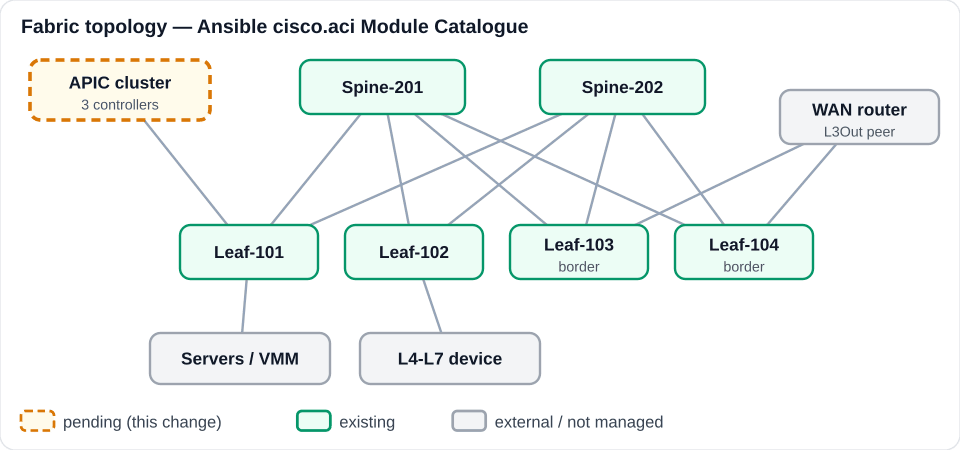
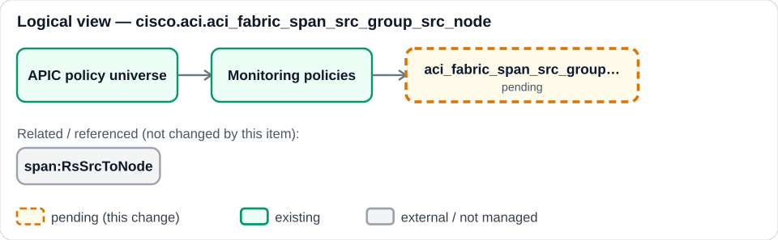

| ACI NaC Pipeline · aci_fabric_span_src_group_src_node → APIC {{ apic_host }} · pre-test · run tmpl-aam-275 |
| ⏳ APPROVAL REQUIRED — template. Pre-test not collected; nothing has been applied. |
The pipeline has prepared cisco.aci.aci_fabric_span_src_group_src_node for APIC {{ apic_host }}. Manage Fabric SPAN source nodes on Cisco ACI fabrics. Source nodes are only configurable when the source_group provided has drop_packets set to true.
This change covers 1 object(s): 1 span:RsSrcToNode object (state: present). Review the context, design values and pre-test summary below, then approve or deny. |
| Pipeline |
|
Context - please read before approving- This is a catalogue template for cisco.aci.aci_fabric_span_src_group_src_node from Ansible cisco.aci Module Catalogue. Values are the example / placeholder values in the catalogue, not a live design.
- Change scope: 1 span:RsSrcToNode object (state: present). Target:
APIC {{ apic_host }}. - Source: model
models/aci_fabric_span_src_group_src_node.yml, playbook playbooks/275_aci_fabric_span_src_group_src_node.yml. - Credentials are placeholders only (
{{ apic_password }}). Nothing has been applied and no controller was contacted. - Pre-test, health score and fault counts are not collected (template). Run the real pre-test on your self-hosted runner before approving a live change.
| |
| Decision required |
|
Each button opens a reply to 179172@gmail.com with the subject Re: ARR Simulator [APPROVAL REQUIRED] aci_fabric_span_src_group_src_node (run tmpl-aam-275) and the body APPROVE or REJECT. You can also reply to this email with that word. |
| Fabric topology |
 |
| Logical view |

Legend: dashed amber = pending (this change) · green = existing · grey = external / not managed. Diagrams are original illustrations of the example design. If they do not show, open the web preview. |
| Design values |
| Parameter | Value (example) | Note |
|---|
| annotation | orchestrator:ansible | | | node | 101 | | | pod | 1 | | | source | my_source | | | source_group | my_span_source_group | | | state | present | |
|
| Change preview |
---
# Sample playbook for cisco.aci.aci_fabric_span_src_group_src_node
# Build order: 275
# Manage Fabric SPAN source nodes (span:RsSrcToNode)
# Reads models/aci_fabric_span_src_group_src_node.yml and uses inventory placeholders
# {{ apic_host }} {{ apic_username }} {{ apic_password }}.
# Default model state is present: the present and query tasks run.
# The absent task runs only when the model state is set to absent.
- name: "275 aci_fabric_span_src_group_src_node"
hosts: apic
gather_facts: false
collections:
- cisco.aci
vars_files:
- ../models/aci_fabric_span_src_group_src_node.yml
tasks:
- name: Ensure aci_fabric_span_src_group_src_node is present
cisco.aci.aci_fabric_span_src_group_src_node: "{{ aci_fabric_span_src_group_src_node | dict2items | rejectattr('value', 'none') | list | items2dict | combine({'state': 'present'}) }}"
delegate_to: localhost
when: (aci_fabric_span_src_group_src_node.state | default('present')) == 'present'
register: present_result
- name: Query aci_fabric_span_src_group_src_node
cisco.aci.aci_fabric_span_src_group_src_node: "{{ aci_fabric_span_src_group_src_node | dict2items | rejectattr('value', 'none') | list | items2dict | combine({'state': 'query'}) }}"
delegate_to: localhost
when: (aci_fabric_span_src_group_src_node.state | default('present')) in ['present', 'query']
register: query_result
- name: Remove aci_fabric_span_src_group_src_node (only when model state is absent)
cisco.aci.aci_fabric_span_src_group_src_node: "{{ aci_fabric_span_src_group_src_node | dict2items | rejectattr('value', 'none') | list | items2dict | combine({'state': 'absent'}) }}"
delegate_to: localhost
when: (aci_fabric_span_src_group_src_node.state | default('present')) == 'absent'
register: absent_result
tags:
- absent |
| Pre-test summary |
| Check | Tool | Result |
|---|
| Syntax / schema validation | ansible-lint, --syntax-check | not collected (template) | | Dry run / plan | ansible-playbook --check --diff | not collected (template) | | Existing object / conflict check | controller query | not collected (template) | | Fabric health score | controller health | not collected (template) | | Faults (critical / major) | controller faults | not collected (template) | | Pre-change config backup | snapshot / export | not collected (template) |
|
| ARR Simulator · approval email template v1 · 26 Nov 2026, 8:48 PM AEDT · Ansible cisco.aci Module Catalogue · item 275. Template only: no controller was contacted and no results were collected. Catalogue: zFrontier / Ansible cisco.aci Module Catalogue |